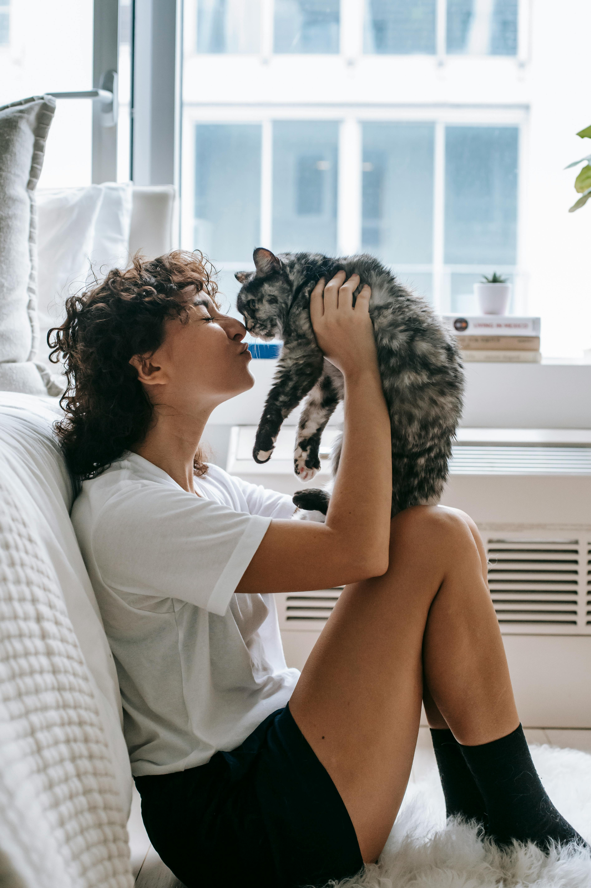

The Bond Between Cats and Humans
Cats have been companions to humans for thousands of years. Their mysterious and independent nature makes them both intriguing and endearing to people of all ages. The bond between cats and their human caregivers is often characterized by mutual affection and respect.
Benefits of Having a Cat
Owning a cat can provide numerous benefits to your health and well-being. Some of the key benefits include:
- Stress Reduction: Studies have shown that interacting with cats can help lower stress levels and promote relaxation.
- Companionship: Cats provide constant companionship, which can help reduce feelings of loneliness.
- Improved Mental Health: The presence of a cat can improve mood and provide emotional support.
- Increased Physical Activity: Playing with cats can encourage physical activity and exercise.
Popular Cat Activities
Cats enjoy a variety of activities that keep them mentally and physically stimulated. Some popular activities include:
- Playtime: Engaging with toys such as feathers, lasers, and balls.
- Exploration: Allowing them to explore new areas and climb on cat trees.
- Grooming: Regular grooming sessions to keep their fur clean and free of mats.
- Social Interaction: Spending quality time with their human companions.